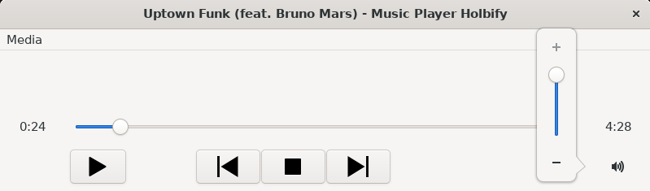
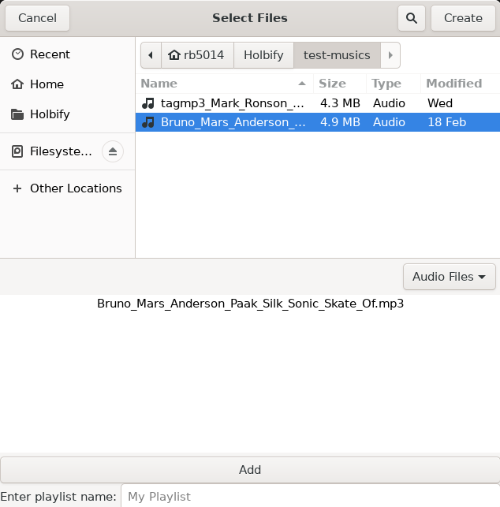

HOLBIFY
Introduction
Holbify is a music player with basic features such as play/pause/stop a song, show song informations, go to next/previous song, change the volume of the program, create/open playlists...

Features
Play a song / Change volume / Show song information
The user by clicking on the Play button will either open a dialog to choose a file, or start again a song already loaded. Loading another song will send the previous one in a "Recent playlist", permitting the user to use the Previous/Next buttons.
Create playlists
It is possible to create playlists, stored locally with the name of your choice!
Open playlists
Play your best Bruno Mars playlist any time you want after you created it!

About
This is a Portfolio Project for Holberton School, created by Romain Bayle
Since I've always played guitar, and listened to a lot of music, the idea of creating a music player to showcase my talents as a developper came naturally.
I also had to learn the C++ language for my future internship starting in March, I wanted to get a lead and be ready as soon as possible. Therefore, I decided to mix the two ideas into one: Creating a music player in C++.C++ is known to be one of the most complex language, and this project confirmed it for me. It was a great challenge, and that is also what i was looking for when I started creating this application from scratch. Not everything is perfect yet, but I will be adding more features in the future and also customize the design a little bit more.
Here is a link to my repository:
And here is a link to my Linkedin profile: